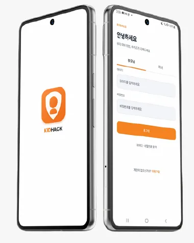
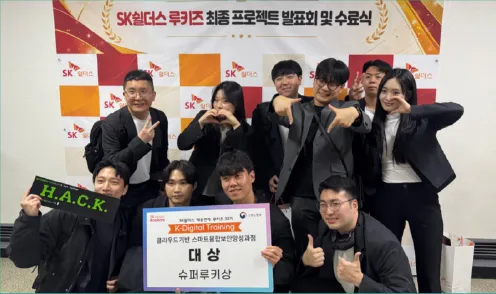
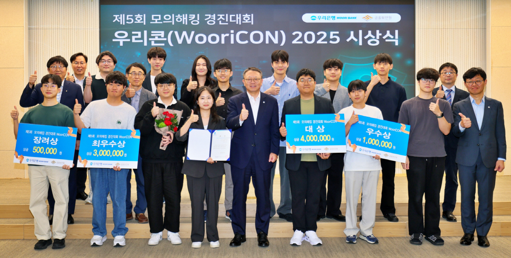

01 / 소개PORTFOLIO · 2026
꺾이지 않는 마음으로 성장하는 최건우입니다.
정보보안학과를 전공하고 정보보호병으로 복무하며 보안 분야의 기초 역량을 쌓았습니다. 이후 모의해킹 프로젝트에서 직접 개발한 서비스를 대상으로 취약점을 분석하고 공격 시나리오를 구현하며 실전 경험을 쌓았습니다. 취약점을 발견하는 데 그치지 않고 발생 원인과 대응 방안까지 고민하며, 끊임없는 학습과 도전을 통해 실무 역량을 갖춘 보안 전문가로 성장하고자 합니다.
02 이력
학력 · 교육
우석대학교
정보보안학과 · 졸업
SK쉴더스 루키즈
클라우드 기반 스마트 융합 보안 · 수료
수상
SK쉴더스 루키즈 최종 프로젝트
대상
제5회 우리은행 모의해킹 경진대회
우수상
우석 컴퓨팅사고 창작대회
대상
자격증
- 네트워크관리사 2급
- 정보처리기능사
- 인터넷 보안 전문가 2급
- 컴퓨터활용능력 2급
- 1종 보통 운전면허
03 프로젝트
2025 — 202601SK쉴더스 루키즈 · 최종 프로젝트 대상Kidhack
자녀보호 앱 시나리오 기반 모의해킹2026
자체 개발한 자녀보호 서비스를 대상으로 웹·모바일·인프라 취약점을 진단하고, 취약점을 연결한 공격 시나리오를 검증했습니다.
- 기간
- 2026.08.21 — 2026.10.21
- 담당
- 웹 취약점 진단 · 시나리오 구성 · 시연 영상 PL

주요 기여
- 웹 서비스 취약점 점검 및 웹·인프라 연계 공격 시나리오 구성
- 웹셸 업로드, Blind SQL Injection 자동화, 사전 공격 스크립트 작성
- 시나리오별 시연 영상 제작 PL로 제작 과정 총괄
수상 기록 보기 ↗

02우리은행 · 제5회 모의해킹 경진대회 우수상WooriCON
금융 서비스 웹 취약점 진단2025
금융 서비스 환경의 웹 애플리케이션을 대상으로 인증·인가 및 XSS 취약점을 분석하고, 진단 결과를 보고서로 정리했습니다.
- 기간
- 2025.08.18 — 2025.08.29
주요 기여
- Burp Suite를 활용한 인증·인가 및 XSS 취약점 발견
- 취약점 발생 원인과 검증 결과를 정리한 진단 보고서 작성

04 연락처
010-5653-5962/rkehzk@gmail.com